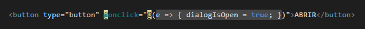
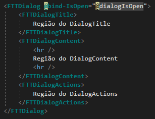
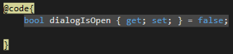

Link
Exemplo
Abaixo uma serie de opções para LINK e exemplos de como usar.
Link para Pokemon
Squardle
Usando
Variavel booleana que quando
true
abre o dialog e quando
false
fecha o modal

Codigo usado
Abaixo uma imagem de como implementar o dialog no seu sistema

Parametro
bind-IsOpen
Aqui criamos a variavel que passamos como parametro para abrir o dialog

Link para pokemon
LinkPage
Essa é a pagian aberta ao clicar no link!
Nome Pokemon: Squardle